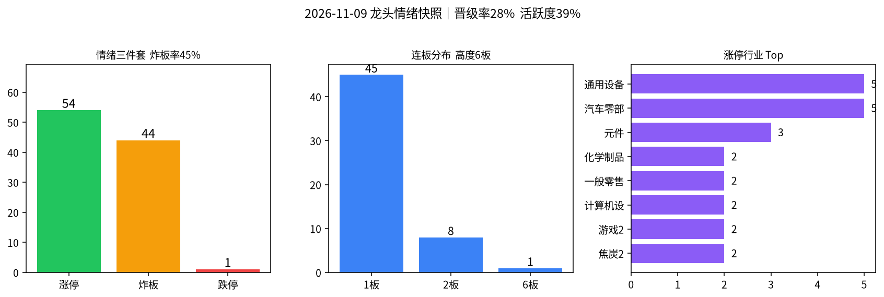

交易日 2026-11-09（周一） · 目标交易日 2026-11-10（周二） · 修复初期·散首板簇
情绪：修复初期 涨停 54 · 跌停 1 炸板率 44.9% · 高度 6板| 票 | 昨动作 | 今收盘涨跌幅 | 判定 |
|---|---|---|---|
| 默认空仓观望 | 空仓 / ≤5% | 跌停15→1、涨停回升但炸板率高 | 对 |
| 603381 永臻股份 | 不加 | −4.05%（断板） | 对 |
| 002578 闽发铝业 | 不加（5板） | +9.98%（6板） | 对（纪律） |
| 601599 浙文影业 | 不加（5板） | +5.91%（未板） | 对 |
| 002506 协鑫集成 | 不加 | −3.49% | 对 |
| 002156/002371 通富·华创 | 清仓/不加 | −1.68% / −2.71% | 对 |
| 600641/301697 先导·贝特利 | 不加 | 先导炸板 +4.20% / 贝特利 −4.26% | 对 |
一句话：周五「空仓+回避高度杂毛+清残留」全部有效；闽发继续板不改「不加」。改进（未回测）：退潮末段次日跌停骤收可微调为极轻观察新首板簇，但仍禁接力高度；炸板率＞40% 不上调仓位上限。
涨停 54（周五32↑）、跌停仅 1（周五15↓骤收）、晋级率 28.1%（周五13.3%↑）、乐咕活跃度约 39.1%（周五约13.7%↑）；但炸板 44、炸板率 44.9% 偏高，连板高度 6板仅闽发铝业杂毛独苗，行业 Top 为通用设备5 / 汽车零部5 的低位散首板簇——定性 修复初期（质量一般），尚未到可进攻的启动。默认极轻，禁追高板与脏板。
今日非高潮/退潮，不触发情绪→路线2风险过滤。
| 指标 | 数值 | 备注 |
|---|---|---|
| 涨停家数 | 54 | 已剔 ST / 北交所；东财 raw54→clean54；乐咕真实涨停≈53 |
| 跌停家数 | 1 | 凤凰航运；乐咕真实跌停≈1 |
| 炸板家数 | 44 | 炸板池 clean44 |
| 炸板率 | 44.9% | 炸板/(涨停+炸板)=44/98；回升伴随大量试错失败 |
| 连板高度 | 6板 | 仅闽发铝业 |
| 连板结构 | 6板 1 / 2板 8 / 1板 45 | 断层：无3–5板中军梯队 |
| 昨日涨停数 | 32 | previous 池 clean（=周五涨停） |
| 晋级数 / 晋级率 | 9 / 28.1% | 晋级回升，但仍偏低 |
| 高度/主线亏钱样本 | 永臻断板−4.1%；浙文未晋级+5.9%；先导炸板；通富/华创续弱 | |
| 两市成交额 | 约 14826亿（新浪：上证≈6825 + 深成≈8001；周五约16578↓） | |
| 涨停池成交额 | 约 309亿（仅涨停标的，周五约194↑） | |
读表一句话：跌停骤收 + 涨停/晋级回升 = 修复信号；炸板率近半 + 无中位连板梯队 = 质量差，明日只做干净早封首板簇观察/极轻，不接力高度。

附图：涨停 / 炸板 / 跌停柱状 + 连板分布 + 行业集中（emotion_20261109.png）
6板：闽发铝业（002578）—— 一字后炸1回封，无主线辨识，不加。
2板：东方新能、日出东方、东方嘉盛、龙江交通、大东方（炸4）、润贝航科、东方创业（炸9）、红太阳（炸10）—— 多数非同题材、封板质量参差，不接力当主仓。
主线判断依据 = 涨停池行业集中度 + 封板时间/是否回封；概念涨幅榜未作为主论据。
情绪 = 修复初期（质量一般） → 专项总仓建议 0%～≤8%；同时持仓建议 0～1 只；不追一字高位、不接力 3板及以上、不博弈脏板回封。
| 标的 | 603121 华培动力（首选）/ 603286 日盈电子（备选）；排除光洋股份（炸6） |
|---|---|
| 动作 | 开多条件（极严） |
| 进场 | 竞价平开～高开≤3%且有买盘；低开＞2%或竞价砸盘 → 不加。弱转强（回封干净、跟风未炸扩散）可补一点。不追高开＞5% 或一字。 |
| 止损 | 跌破当日分时低点或开板后30分钟无法回封 → 走 |
| 目标 | 看能否晋级2板 / 板块是否扩容 |
| 仓位 | 单票 ≤5%，两票合计 ≤8% |
| 原因 | 修复初期唯一有浓度的首板簇；炸板率仍高，仓位必须极严 |
| 作废 | 竞价同板块多数低开＞3%；开盘后跟风大面积炸板；跌停重新扩散≥5家 |
| 标的 | 000530 冰山冷热 / 001379 腾达科技 / 002347 泰尔股份（排除雪人集团） |
|---|---|
| 动作 | 只观察；竞价平稳且板块内≥3家同步强、炸板未扩散，才允许最强1只升为极轻开多（≤5%） |
| 仓位 | 默认 0%；升级后单票 ≤5%，与指令1合计仍 ≤8% |
| 原因 | 有早封干净样本，辨识弱于汽车零部，先看晋级 |
| 作废 | 同指令1；或午后杂毛主导该板块成交 |
| 动作 | 不加 |
|---|---|
| 仓位 | 0% |
| 原因 | 高度杂毛独苗，无主线；修复期不接力断层高度 |
| 标的 | 永臻 / 浙文 / 协鑫 / 通富 / 华创 / 先导 / 贝特利 |
|---|---|
| 动作 | 不加（若仍持残留短线仓 → 反抽减/清） |
| 仓位 | 0% |
| 原因 | 辨识已失；修复初期不回流熄火主题 |
| 标的 | 雪人集团、光洋股份、东方创业、红太阳，以及任何炸板≥4次回封票 |
|---|---|
| 动作 | 不加 |
| 仓位 | 0% |
| 原因 | 修复期炸板率已偏高，脏板胜率更差 |
20261109；乐咕活跃度交叉；个股与两市成交额来自新浪。数字见 data/*_20261109* / metrics_20261109.json。未编造。